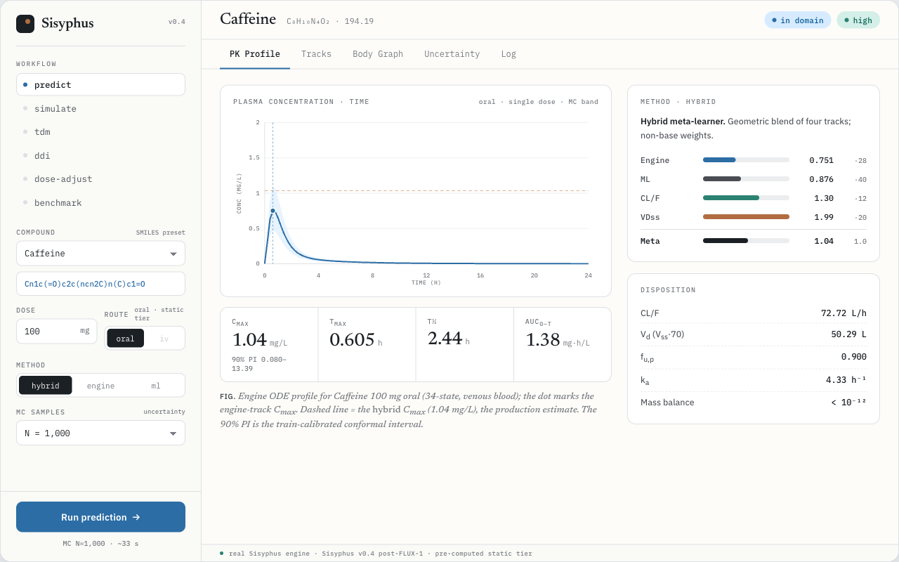
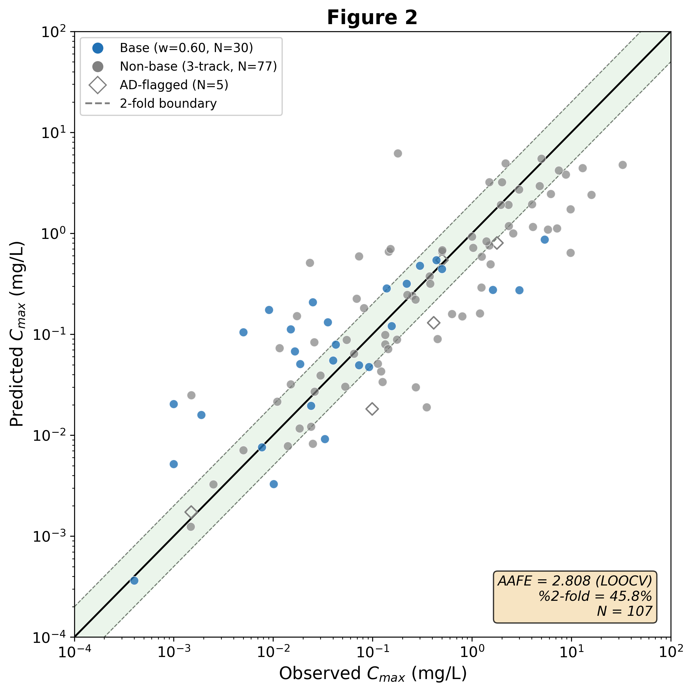

The body as a graph.
PK as a distribution.
Sisyphus turns a SMILES string and a dose into Cmax, AUC, and half-life — with honest uncertainty — by modeling the body as a typed directed graph and propagating distributions through an ODE system derived from its topology.

Three ideas that define Sisyphus
The design choices that make it extensible and honest, not just another PBPK script.
The body is a graph
Organs are nodes; vessels, transit, and clearance are typed edges. The ODE system is derived from graph topology — you extend the model by editing YAML, never the engine.
Everything is a Distribution
Every physiological and drug parameter carries its uncertainty. Monte-Carlo propagation makes prediction intervals the native output, not a bolt-on.
The engine knows types, not identities
No organ or drug names live in the engine. Identity lives in data, so new organs, enzymes, and routes never require an engine change.
Six clinical workflows, one engine
Every view in the console is the same identity-blind ODE engine, parameterized differently. Open the console →
SMILES → Cmax, Tmax, AUC, t½ with a 90% prediction interval.
Multi-dose regimens — steady state, accumulation, trough convergence.
Bayesian therapeutic drug monitoring with SBI / IBIS / IS routing.
Drug–drug interactions via enzyme-abundance change before compile.
Model-informed precision dosing to a target steady-state exposure.
External N=107 holdout validation — predicted vs observed, by track.
Measured against a held-out reality
A scaffold-stratified N=107 external holdout, never used in training, tuning, or model selection.

| Track | AAFE | within 2-fold |
|---|---|---|
| Meta (production) | 2.78 | 43.9% |
| Engine only | 4.46 | 27.1% |
| ML only | 3.01 | 43.0% |
| Meta, in-domain | 2.83 | 42.0% |
A four-track meta-learner blends a mechanistic engine, a data-driven ML Cmax, a CL/F analytical, and a conditional VDss track. Prospective FDA NMEs (2024–25) are harder still at AAFE 3.27 — generalization, stated plainly.
Or run it from the command line
The console is one face of a Python library + CLI.